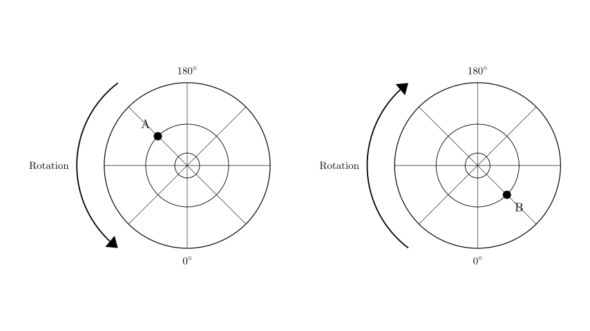
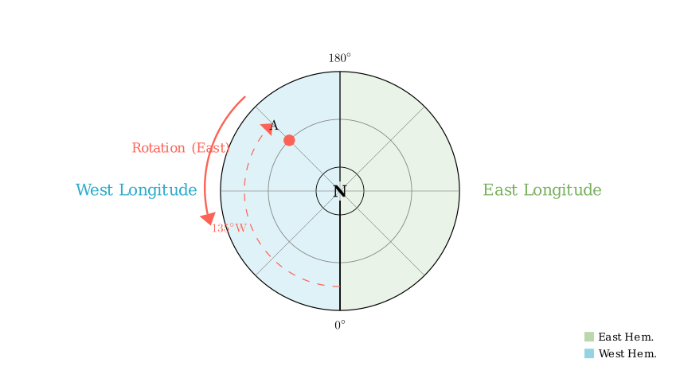
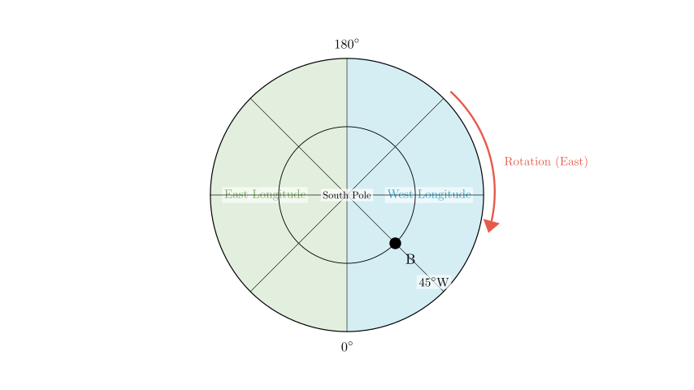

Problem Statement:
Read the diagrams and complete the following question. Based on the diagrams, which of the following statements is correct?
A. Point A experiences direct sunlight only once a year. B. Point B may experience direct sunlight twice a year. C. From the perspective of North/South hemispheres, Point B is in the Southern Hemisphere. D. From the perspective of East/West hemispheres, Point A is in the Eastern Hemisphere and Point B is in the Western Hemisphere.
Solution Approach:
To solve this problem, we need to interpret the polar projection maps. The key steps are: 1. Determine the hemisphere (North or South) for each map based on the direction of Earth's rotation. 2. Determine the longitude of points A and B by establishing the East/West direction relative to the 0° and 180° meridians. 3. Evaluate the latitude implications for direct sunlight (solar zenith). 4. Verify each option against these findings.

Step 1: Determine the Hemispheres
The direction of Earth's rotation is the primary indicator for identifying the pole shown in a polar projection.
Analyzing the Left Map (Point A): The rotation arrow indicates a Counter-Clockwise direction. Therefore, the center of this map is the North Pole, and it depicts the Northern Hemisphere.
Analyzing the Right Map (Point B): The rotation arrow indicates a Clockwise direction. Therefore, the center of this map is the South Pole, and it depicts the Southern Hemisphere.
Immediate Check: This finding directly supports Option C: "From the perspective of North/South hemispheres, Point B is in the Southern Hemisphere." Let's continue to verify the other details to ensure this is the only correct answer.

Step 2: Determine Longitudes and East/West Hemispheres
For Point A (Left Map - North Pole): * The rotation is Counter-Clockwise, which points East. * Starting from the 0° meridian (bottom) and moving East (Counter-Clockwise), we cover the Eastern Hemisphere (Right half of the map). * Starting from the 0° meridian and moving West (Clockwise), we cover the Western Hemisphere (Left half of the map). * Point A is located in the top-left quadrant. To reach A from the 180° line, we move clockwise (West). Alternatively, tracing from 0° clockwise (West), A is past 90°W. * Specifically, A is halfway between 90°W and 180°, placing it at approximately 135°W. * Conclusion for A: Point A is in the Western Hemisphere.
For Point B (Right Map - South Pole): * The rotation is Clockwise, which points East. * Starting from the 0° meridian (bottom) and moving East (Clockwise), we cover the Eastern Hemisphere (Left half of the map). * Moving West (Counter-Clockwise) from 0° covers the Western Hemisphere (Right half of the map). * Point B is located in the lower-right quadrant. This is in the direction of 'West' from 0°. * Specifically, B is at a 45° angle from the 0° line. * Conclusion for B: Point B is at 45°W, which is in the Western Hemisphere.
Check against Option D: Option D claims A is in the Eastern Hemisphere and B is in the Western Hemisphere. Since A is actually in the Western Hemisphere, Option D is incorrect.

Step 3: Analyze Latitude and Solar Directness (Options A and B)
Outside the Tropics: Never. In polar projections like this, the concentric circles usually represent major latitudes (e.g., Equator, Tropics, Polar Circles) or standard intervals (30°, 60°). Point A is on a middle circle in the Northern Hemisphere. Without explicit labels, we cannot confirm if it is exactly on the Tropic of Cancer. Usually, mid-latitude points like this (often 45° or 60°) receive no direct sunlight. Thus, Option A is likely incorrect or at least unprovable compared to Option C.
Option B: "Point B may experience direct sunlight twice a year." Point B is in the Southern Hemisphere. Similar to A, it lies on a mid-latitude circle. If this circle represents 30°S or 45°S, it never receives direct sunlight. The term "may" suggests possibility, but visually B appears to be well outside the tropical zone (which would be very close to the outer edge if the outer edge is the Equator). Thus, Option B is unlikely.
Final Verification
Final Answer: The correct option is C.